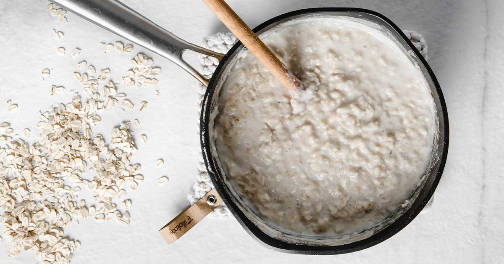

oatmeal
Home

Quick and easy oatmeal recipe
this is a fast and easy way to make a good breakfast with option to add your favourite fruit
Ingredients
- 1 cup of rolled oats
- 2 cup of unsweetened almond milk, any milk works
- 1 pinch of salt
Directions
- Combine all ingredients into a small saucepan and turn heat to medium/high.
- Bring to a boil. Then, turn the heat down to low/medium and continually stir for around 3-5 minutes as the oatmeal cooks and thickens.
- Once oatmeal is at the desired consistency, remove from heat, and serve immediately.
Ps: Add your favourite topping such as berries,banana or a pinch of cinnamon for extra flavor.